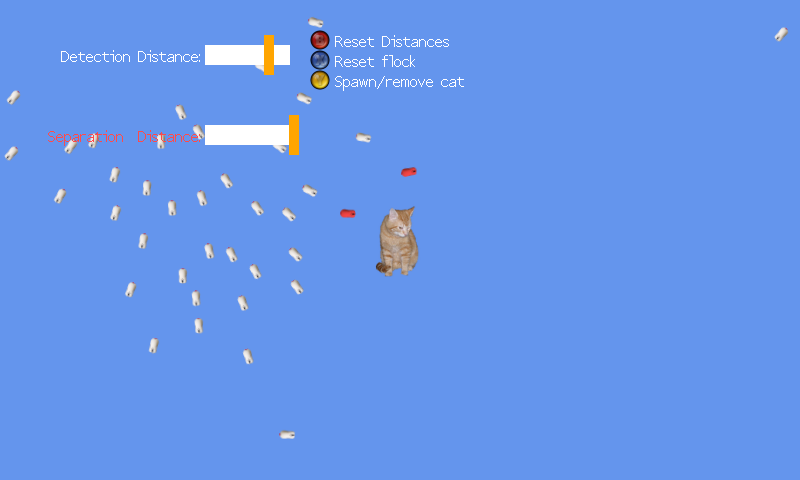

Flocking
Ported from Microsoft's XNA 4.0 Flocking sample.
Source for this sample on GitHub ↗

Play ▸Opens in a new tab. Press Y to add the cat, then tune the flock with the arrow keys.
About this sample
Each bird aligns with nearby birds, moves toward the group, keeps its distance from close neighbours and flees the cat. Change the detection and separation distances to see how the flock responds.
Controls
| Action | Keyboard | Gamepad |
|---|---|---|
| Select a distance slider | Up / Down | D-pad Up / Down |
| Change the selected distance | Left / Right | D-pad Left / Right or triggers |
| Add or remove the cat | Y | Y |
| Move the cat | W / A / S / D | Left thumbstick |
| Reset the distances | B | B |
| Reset the flock | X | X |
| Exit | Escape | Back |